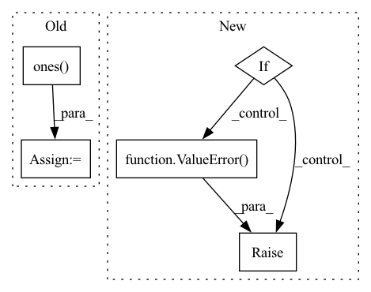

Pattern ID :5888
Before Change
output.append(speaker_embedding)
if return_all_spk_embedding:
random_idx = torch.multinomial(torch.ones( len(self.all_spk_idx)) , 100, replacement=False).long() // 100 for experimentally to avoid OOM error
all_speaker_embedding = self.embed_sources(self.all_spk_idx[random_idx]) // (n_training_sources, latent_dim)
output.append(all_speaker_embedding)
After Change
all_spk_embedding: (n_training_sources, latent_dim)
if sorted_idx is None:
if return_all_layers or return_spk_vector or return_spk_embedding or return_all_spk_embedding:
raise ValueError( "Set return_all_layers=False, return_spk_vector=False, return_spk_embedding=False, return_all_spk_embedding=False.")
sorted_idx = self.solve_permutation(mixture, spk_idx=spk_idx) // (batch_size, T, n_sources)
return sorted_idxIn pattern: SUPERPATTERN
Frequency: 3
Non-data size: 5
Instances Fragment ID: 20782877
Project Name: tky823/dnn-based_source_separation
Commit Name: bceeacb692d2f21773f3f8ad7921d5ff890a1403
Time: 2021-11-05
Author: delta9guitar97@gmail.com
File Name: src/models/wavesplit.py
M Class Name: WaveSplit
N Class Name: WaveSplit
M Method Name: forward(9)
N Method Name: forward(9)
M Parent Class: WaveSplitBase
N Parent Class: WaveSplitBase
M File Name: src/models/wavesplit.py
N File Name: src/models/wavesplit.py
M Start Line: 101
M End Line: 116
N Start Line: 159
N End Line: 185
Before Change
out = self.forward(pos)
// compute the jacobian
z = Variable(torch.ones( out.shape) )
jacob = grad(out,pos,grad_outputs=z,create_graph=True)[0]
// compute the diagonal element of the HessianAfter Change
if self.kinetic == "auto":
return self.kinetic_energy_autograd(pos,out)
elif raise ValueError( "kinetif %s not recognized" %self.kinetic)
def kinetic_energy_autograd(self,pos,out=None):
"""Compute the second derivative of the network
output w.r.t the value of the input. Fragment ID: 20782876
Project Name: nlesc-jcer/qmctorch
Commit Name: 367e2652236e20fd44c930c0364147f2315f419c
Time: 2019-06-26
Author: nicolas.gm.renaud@gmail.com
File Name: pyCHAMP/wavefunction/neural_wf_base.py
M Class Name: NEURAL_WF_BASE
N Class Name: NEURAL_WF_BASE
M Method Name: kinetic_energy(3)
N Method Name: kinetic_energy(3)
M Parent Class: nn.Module
N Parent Class: nn.Module
M File Name: pyCHAMP/wavefunction/neural_wf_base.py
N File Name: pyCHAMP/wavefunction/neural_wf_base.py
M Start Line: 76
M End Line: 90
N Start Line: 66
N End Line: 71
Before Change
super(BasicBlock, self).__init__()
self.conv1 = nn.Conv2d(in_planes, planes, kernel_size=3, stride=stride, padding=1, bias=False)
self.mask1 = nn.Conv2d(in_planes, planes, kernel_size=3, stride=stride, padding=1, bias=False)
self.mask1.weight.data = torch.ones( self.mask1.weight.size())
self.bn1 = nn.BatchNorm2d(planes)
self.conv2 = nn.Conv2d(planes, planes, kernel_size=3, stride=1, padding=1, bias=False)
self.mask2 = nn.Conv2d(planes, planes, kernel_size=3, stride=1, padding=1, bias=False)After Change
super(BasicBlock, self).__init__()
if norm_layer is None:
norm_layer = nn.BatchNorm2d
if groups != 1 or base_width != 64:
raise ValueError( "BasicBlock only supports groups=1 and base_width=64")
if dilation > 1:
raise NotImplementedError("Dilation > 1 not supported in BasicBlock")
// Both self.conv1 and self.downsample layers downsample the input when stride != 1
self.conv1 = conv3x3(inplanes, planes, stride) Fragment ID: 20782875
Project Name: incheon-cho/dynamic_model_pruning_with_feedback
Commit Name: 12bd228dc14e0c422c262bcbc1b81cb435e05a4d
Time: 2020-09-06
Author: dlscjs5362@gmail.com
File Name: models/resnet.py
M Class Name: BasicBlock
N Class Name: BasicBlock
M Method Name: __init__(9)
N Method Name: __init__(4)
M Parent Class: nn.Module
N Parent Class: nn.Module
M File Name: models/resnet.py
N File Name: models/resnet.py
M Start Line: 31
M End Line: 47
N Start Line: 24
N End Line: 40